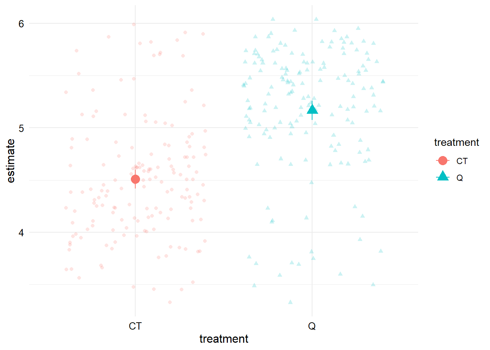
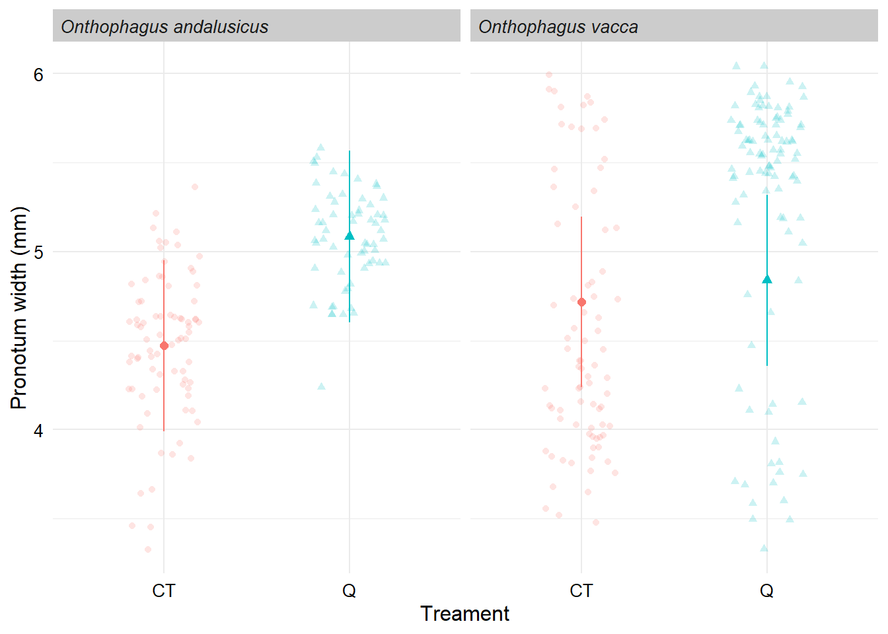

Data modelling
Setup
Here we load the packages, set the ggplot theme and load the data.
Set the ggplot theme for all plots.
theme_set(theme_minimal())
theme_update(strip.text = element_text(face = "bold", size=10, hjust=0),
strip.background = element_rect(fill = "grey80", colour = NA),
axis.text = element_text(size=10, colour = "black"),
axis.title = element_text(size=12, colour = "black"))Import the data.
Hypothesis #1
First we want to know whether the treatment had an immediate effect on beetle morphology, and whether this effect differed for the two species.
Recall from our data exploration that two of the Onthophagus vacca shipments did not have both treatments. We will filter these out for our analysis, as well as generations other than the first generation.
# Filter data
db_data_F1 <-
db_data %>%
filter(generation == 1 &
!shipment %in% c("5A", "5B")) %>%
droplevels()
# Check sample sizes
db_data_F1 %>%
drop_na(pronotum_width) %>%
group_by(treatment, sex, shipment, species) %>%
count()# Fit the model
m1a_pw <- lm(pronotum_width ~ treatment*species + sex, data = db_data_F1)
# Check model conditions
par(mfrow = c(2,2)); plot(m1a_pw); par(mfrow = c(1,1))# Can look at a histogram of the residuals
ggplot(data = augment(m1a_pw), aes(x = .resid)) +
geom_histogram()`stat_bin()` using `bins = 30`. Pick better value with `binwidth`.# Model results
tidy(m1a_pw)There is no strong evidence for an interaction effect. I think it’s reasonable to simplify the model and drop the interaction.
# Fit the model
m1b_pw <- lm(pronotum_width ~ treatment + species + sex, data = db_data_F1)
# Check model conditions
par(mfrow = c(2,2)); plot(m1b_pw); par(mfrow = c(1,1))# Can look at a histogram of the residuals
ggplot(data = augment(m1b_pw), aes(x = .resid)) +
geom_histogram()`stat_bin()` using `bins = 30`. Pick better value with `binwidth`.# Model results
# Using the broom package
tidy(m1b_pw)glance(m1b_pw)# Using summary
summary(m1b_pw)
Call:
lm(formula = pronotum_width ~ treatment + species + sex, data = db_data_F1)
Residuals:
Min 1Q Median 3Q Max
-1.86592 -0.30946 0.08434 0.37429 1.39130
Coefficients:
Estimate Std. Error t value Pr(>|t|)
(Intercept) 4.47893 0.06542 68.466 <2e-16 ***
treatmentQ 0.65670 0.06640 9.889 <2e-16 ***
speciesOnthophagus vacca 0.11976 0.06687 1.791 0.0742 .
sexM -0.05947 0.06602 -0.901 0.3684
---
Signif. codes: 0 '***' 0.001 '**' 0.01 '*' 0.05 '.' 0.1 ' ' 1
Residual standard error: 0.5916 on 318 degrees of freedom
Multiple R-squared: 0.2523, Adjusted R-squared: 0.2452
F-statistic: 35.77 on 3 and 318 DF, p-value: < 2.2e-16We have evidence for a treatment effect and some coefficients to help us understand what the effect is. The emmeans package can help us out a bit more here.
m1b_pw_emm <- emmeans(m1b_pw, "treatment")
m1b_pw_emm treatment emmean SE df lower.CL upper.CL
CT 4.51 0.0468 318 4.42 4.60
Q 5.17 0.0471 318 5.07 5.26
Results are averaged over the levels of: species, sex
Confidence level used: 0.95 Let’s plot the results with our raw data - this is a great sanity check to make sure something has not gone horribly wrong!
# Notice the use of tidy() from the broom package
ggplot(data = tidy(m1b_pw_emm, conf.int = TRUE), aes(x = treatment, y = estimate, colour = treatment, shape = treatment)) +
geom_point(size = 4) +
geom_errorbar(aes(ymin = conf.low, ymax = conf.high), width = 0) +
geom_jitter(data = db_data_F1, aes(x = treatment, y = pronotum_width, colour = treatment), alpha = 0.2)
Hypothesis #2
Now let’s investigate whether this effect persists across the generations.
Recall that our most complete data is for Onthophagus vacca shipments 2 and 4 up to generation 3. Let’s use just this data for this hypothesis for now.
# Filter data
db_data_F1_3 <-
db_data %>%
filter(generation %in% c(1, 2, 3) &
shipment %in% c("2", "4")) %>%
droplevels()
# Check sample sizes
db_data_F1_3 %>%
drop_na(pronotum_width) %>%
group_by(treatment, generation, sex, shipment) %>%
count() # Fit the model
m2a_pw <- lm(pronotum_width ~ treatment*generation*shipment, data = db_data_F1_3)
# Check model conditions
par(mfrow = c(2,2)); plot(m2a_pw); par(mfrow = c(1,1))# Can look at a histogram of the residuals
ggplot(data = augment(m2a_pw), aes(x = .resid)) +
geom_histogram()`stat_bin()` using `bins = 30`. Pick better value with `binwidth`.# Model results
tidy(m2a_pw)glance(m2a_pw)summary(m2a_pw)
Call:
lm(formula = pronotum_width ~ treatment * generation * shipment,
data = db_data_F1_3)
Residuals:
Min 1Q Median 3Q Max
-2.2894 -0.2940 0.0632 0.3588 1.2262
Coefficients:
Estimate Std. Error t value Pr(>|t|)
(Intercept) 4.84076 0.14500 33.384 < 2e-16 ***
treatmentQ 1.01100 0.17780 5.686 2.25e-08 ***
generation -0.07697 0.06485 -1.187 0.236
shipment4 -0.94150 0.18597 -5.063 5.89e-07 ***
treatmentQ:generation -0.37419 0.08578 -4.362 1.58e-05 ***
treatmentQ:shipment4 -1.60767 0.27244 -5.901 6.81e-09 ***
generation:shipment4 0.47887 0.08432 5.679 2.35e-08 ***
treatmentQ:generation:shipment4 0.64997 0.12447 5.222 2.64e-07 ***
---
Signif. codes: 0 '***' 0.001 '**' 0.01 '*' 0.05 '.' 0.1 ' ' 1
Residual standard error: 0.539 on 482 degrees of freedom
Multiple R-squared: 0.3541, Adjusted R-squared: 0.3448
F-statistic: 37.76 on 7 and 482 DF, p-value: < 2.2e-16Let’s plot the results with the raw data.
ggplot(data = augment(m2a_pw, se_fit = TRUE),
aes(x = generation, y = .fitted, colour = treatment)) +
geom_line() +
geom_ribbon(aes(ymin = .fitted - .se.fit, ymax = .fitted + .se.fit),
alpha = 0.2) +
geom_jitter(aes(x = generation, y = pronotum_width, colour = treatment), alpha = 0.2) +
facet_wrap(~shipment)
This does not look like a great fit, particularly for shipment 2.
Given the shipment 2 behaves differently to all the other shipments, I suggest we do some thorough checks of the data before pursuing more complex models.
I’ll end it here for now - we can extend/update the analyses at our next meeting.